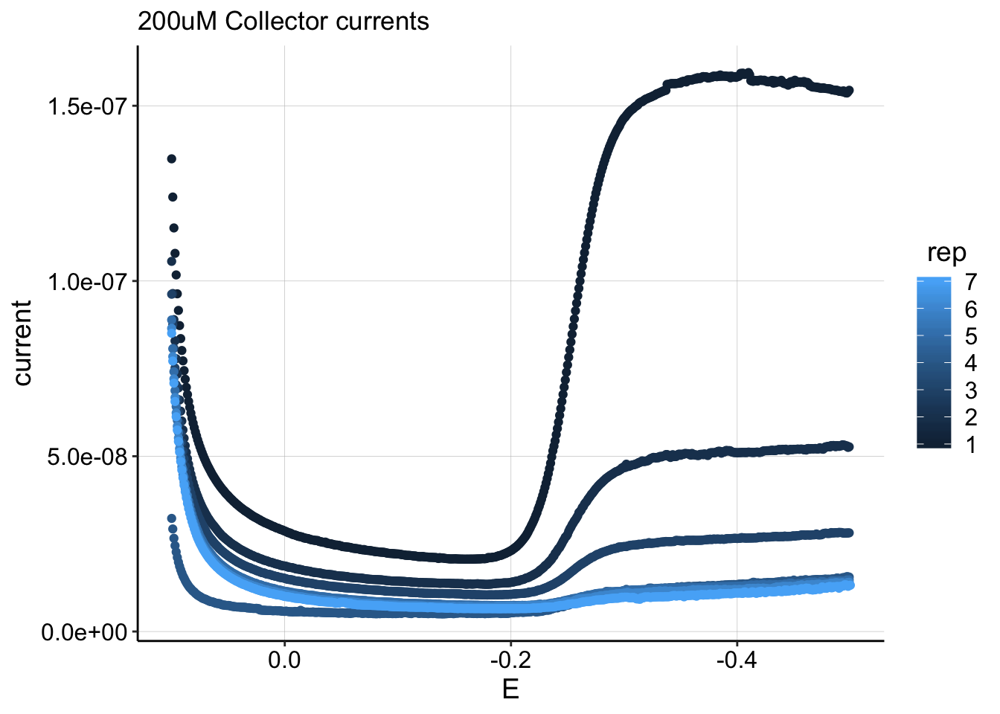
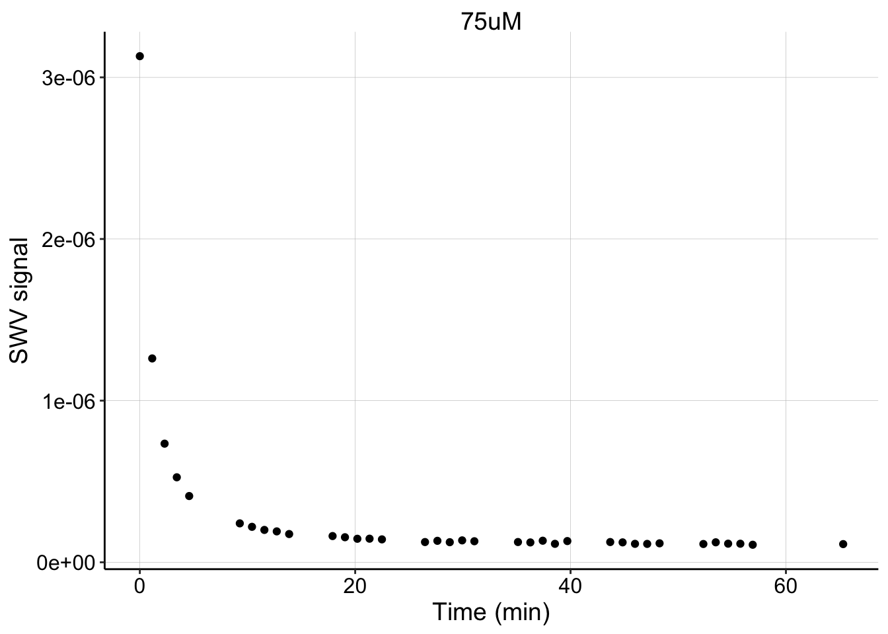

Measuring \(D_{ap}\) Version 3
Transfer non-equilibrium titration \(I_{gc}\) vs. [PYO]
1_04_19
library(tidyverse)
library(cowplot)
library(broom)
library(modelr)
library(viridis)
library(lubridate)
library(knitr)
#knitr::opts_knit$set(root.dir = '/Users/scottsaunders/git/labwork/IDA/12_10_18')
knitr::opts_chunk$set(tidy.opts=list(width.cutoff=60),tidy=TRUE, echo = TRUE, message=FALSE, warning=FALSE, fig.align="center")
theme_1 <- function () {
theme_classic() %+replace%
theme(
axis.text = element_text( size=12),
axis.title=element_text(size=14),
strip.text = element_text(size = 14),
strip.background = element_rect(color='white'),
legend.title=element_text(size=14),
legend.text=element_text(size=12),
legend.text.align=0,
panel.grid.major = element_line(color='grey',size=0.1)
)
}
theme_set(theme_1())
#source("../../tools/echem_processing_tools.R")Notebooks that use version 3 analysis:
Approach
I decided to try all three solutions suggested in V2:
- Make GC/SWV measurements during equilibration, before solution/background is relatively significant.
- Reduce PYO carryover by soaking only IDA working surface
- Explicitly measure background in transfer reactor with blank IDA.
The main idea is to measure during the transfer step, but instead of waiting for equilibrium, to measure repeatedly before the system reaches equilibrium. At this point, the PYO should be associated with the electrode/biofilm and the solution/background PYO should be lower.
The unknown going into this was whether the ever decreasing PYO concentration would be so fast that it would cause poor GC measurements (peak current needs to reach equilibrium) and change the PYO concentration before an SWV scan could be paired with the GC.
Protocol
- Soak only IDA working surface in PYO solution.
- Rinse and transfer to fresh medium reactor.
- Monitor equilibration with successive SWV scans (every minute).
- Every 5 minutes, take a one segment GC scan (3 min).
- Immediately restart SWV scans for 5min following GC. Continue ~1hr until equilibrium reached.
- Remove biofilm IDA, and measure solution with blank IDA.
- Repeat for different concentrations from step 1.
Data
First, let’s see what GC curves look like when taken under non-equilibrium conditions. Normally the curves flatten out as the generator reaches very reducing (negative) potentials.
gc_curves_df <- read_csv("../12_10_18/Processing/12_10_18_reactor_A_processed_GC_i2_curves.csv")
ggplot(gc_curves_df %>% filter(PHZaddedInt == 200), aes(x = E,
y = current)) + geom_point(aes(color = rep)) + scale_x_reverse() +
ggtitle("200uM Collector currents") This plot shows the collector currents taken during the equilibration following a 200uM PYO soak. In total 7 gc’s were taken during this ~1 hr long equilibration, and the first rep was the only one that showed a deviation from the flat/equilibrium flux at the negative potentials. This is likely because the concentration was changing very fast at that point in the equilibration. Note, that 200uM, rep 1 was the only curve to show this behavior.
Following the end of each reductive sweep SWV scans (2 sec duration) were immediately restarted, hopefully providing a reasonably close paired measurement.
Let’s now look at the quantified GC vs. SWV scans for 4 different soak concentrations. You can see that each concentration has multiple datapoints that were taken during each equilibration.
gc_swv_df <- read_csv("../12_10_18/Processing/12_10_18_processed_reactor_A_GC_SWV.csv")
ggplot(gc_swv_df %>% filter(PHZaddedInt < 200 & PHZaddedInt >
10), aes(x = signal_from_swv, y = signal_from_gc)) + geom_point(aes(color = PHZadded)) +
geom_smooth(method = "lm")
The relationship, still looks pretty linear. We could estimate linear slopes for each subset of the data, but for now let’s just look at the best fit line of the whole dataset above. Also note that more datapoints at the higher values would be better.
The linear model yields the following coefficients:
gc_swv_linear_fit1 <- lm(signal_from_gc ~ signal_from_swv, gc_swv_df %>%
filter(PHZaddedInt < 200 & PHZaddedInt > 10))
coef(summary(gc_swv_linear_fit1))## Estimate Std. Error t value Pr(>|t|)
## (Intercept) -1.748189e-08 1.51598e-09 -11.53174 1.007475e-11
## signal_from_swv 1.811346e-01 1.02817e-02 17.61718 5.656763e-16With a slope, \(m\) of about 0.18, we can calculate a \(D_{ap}\) value.
m <- coef(summary(gc_swv_linear_fit1))[2] #about 0.18
psi <- 0.91
t_p <- 1/300 # frequency is 300 hz (sec)
A <- 0.025 #cm^2
S <- 18.4 #cm
D_ap <- (m * A * psi)^2/(S^2 * pi * t_p)
paste("D_ap =", D_ap, "cm^2 / sec")## [1] "D_ap = 4.78962153286365e-06 cm^2 / sec"This \(D_{ap}\) value seems pretty reasonable. In the future we should compare it to replicates and also to a blank IDA subjected to the same analysis.
Potential Problem
I don’t see a problem with the \(D_{ap}\) estimation, but it is worth noting that there may be a problem trying to calculate \(D_m\) from the same equilibration as \(D_{ap}\).
The SWV peak current decay is shown below. You can see that 5 SWVs were taken 1 min apart, followed by a gap. Those gaps are when the GCs were taken.
swv_decays <- read_csv("../12_10_18/Processing/12_10_18_processed_reactor_A_swv_decays.csv")
ggplot(swv_decays %>% filter(PHZaddedInt == "75"), aes(x = norm_time,
y = signal)) + geom_point() + facet_wrap(~PHZadded, scales = "free") +
ylab("SWV signal") + xlab("Time (min)") Note that this decay was also taken with fast SWVs (2 sec duration), and therefore it may be hard to visually compare to the V2 method with slow SWVs (40 sec duration). That said, it seems like the decay was quite rapid, compared to what I was used to seeing. This could just be caused by the different scan settings, but it may also be influenced by the repeated GC scans during this time period. Inevitably, a GC scan will reduce much of the biofilm PYO, and most of it will not be captured by the collector electrode. If \(PYO_{red}\) is more easily able to diffuse out of the biofilm, due to its lower affinity for DNA, these GC scans may be driving PYO out of the biofilm faster than the typical equilibration we want to observe.
Potential Solution
One solution is that we can use one equilibration to take as many GC scans (coupled to 1 SWV scan) to measure \(D_{ap}\). Then we can take another equilibration with just intermittent SWV scans to measure \(D_m\).
Conclusions
- Taking GCs at non-equilibrium seems reasonably effective.
- With this new approach, it is probably worth acquiring as many GC datapoints as possible during a single equilibration.
- With #2, try running a separate equilibration with only SWVs to measure \(D_m\) since GCs may throw off this process.